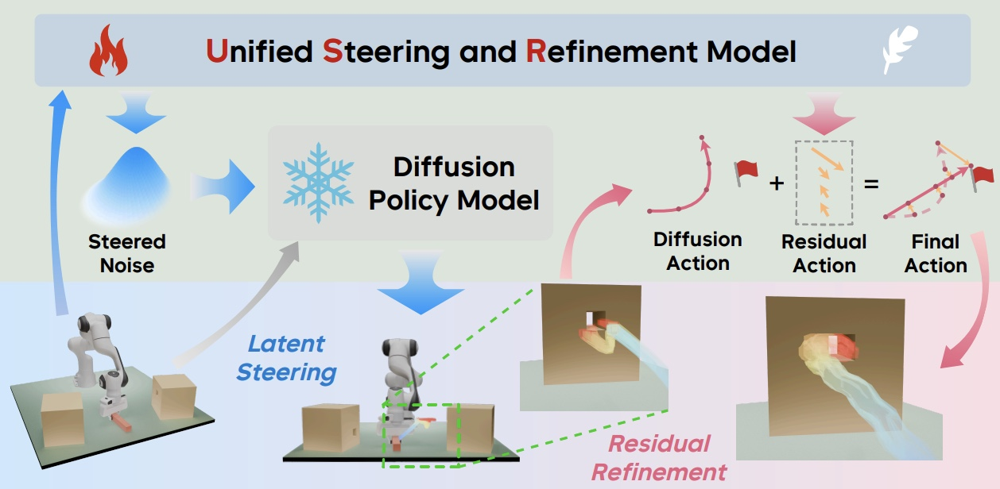
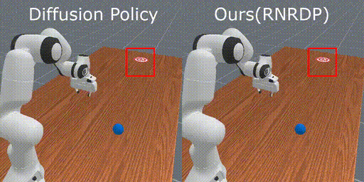
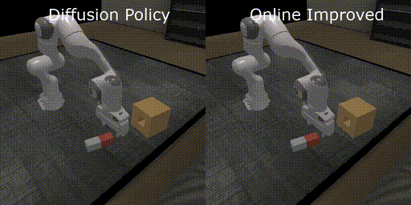
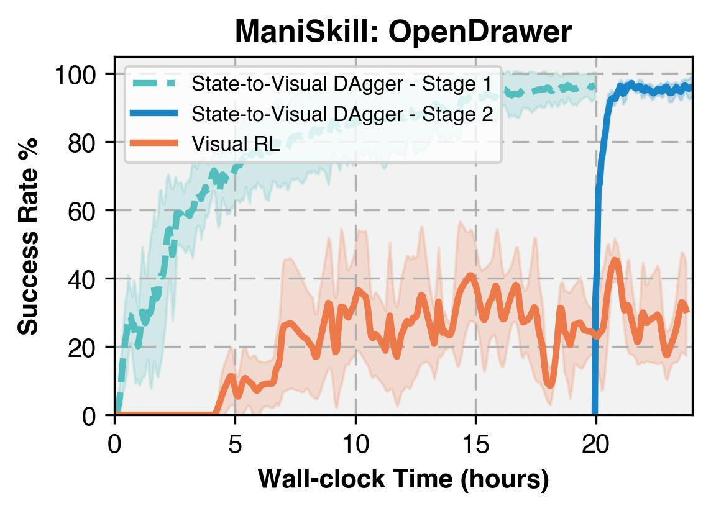
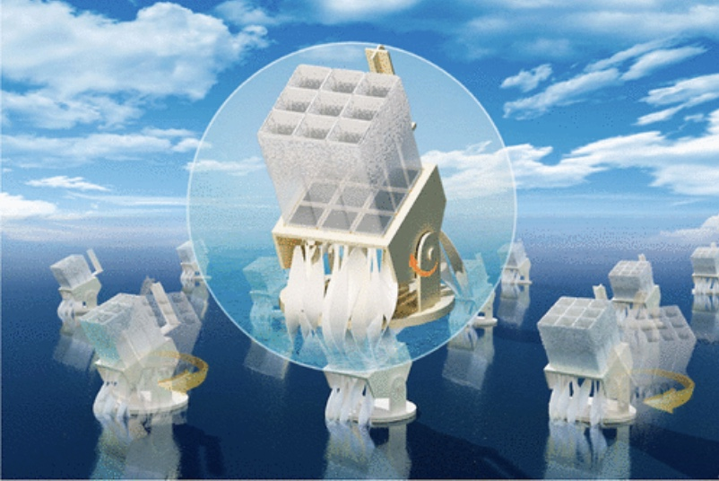
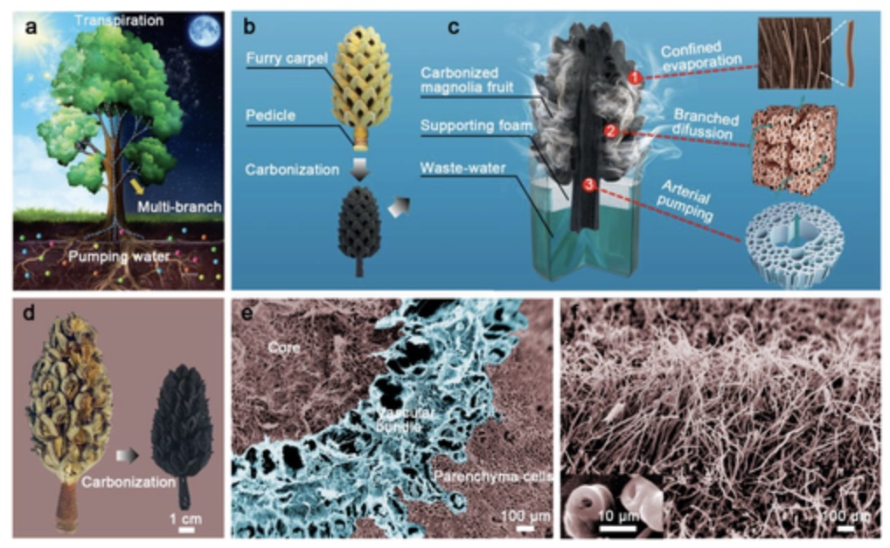

Research
My current research aims to develop intelligent embodied AI systems. To this end, my work centers on Reinforcement Learning, Imitation Learning, Generative Modeling for Robotics, and Vision-Language-Action (VLA) models. I am always happy to collaborate on interesting projects. If you want to chat, feel free to shoot me an email.
|
Publications/Preprints
Papers sorted by recency, Representative papers are highlighted.
|
|

|
Unified Latent Steering and Residual Refinement for Online Improvement of Diffusion Policy Models
Zhengbang Zhu*,
Ziyan Li*,
Xiu Yuan*,
Hanbo Zhang,
Yuxiao Liu,
Chongjie Zhang,
Yong Yu,
Weinan Zhang,
Minghuan Liu (* denotes equal contribution)
Submitted to ICLR 2026
Project Page
/
ArXiv
/
Code
|
|

|
Responsive Noise-Relaying Diffusion Policy: Responsive and Efficient Visuomotor Control
Zhuoqun Chen*,
Xiu Yuan*,
Tongzhou Mu,
Hao Su (* denotes equal contribution)
TMLR 2025
Generative Models for Robot Learning Workshop at ICLR 2025
Project Page
/
ArXiv
/
Code
We propose RNR-DP (Responsive Noise-Relaying Diffusion Policy), a novel diffusion-based approach for visuomotor control that ensures responsive and efficient action generation. By leveraging the noise-relaying action buffer design and sequential denoising mechanism, RNR-DP demonstrates advantages on both response-sensitive and regular tasks across evaluated benchmarks.
|
|

|
Policy Decorator: Model-Agnostic Online Refinement for Large Policy Model
Xiu Yuan*,
Tongzhou Mu*,
Stone Tao,
Yunhao Fang,
Mengke Zhang,
Hao Su (* denotes equal contribution)
ICLR 2025
Project Page
/
ArXiv
/
Code
Large policy models learned by offline imitation learning are often limited by the quantity, quality, and diversity of demonstrations. We introduce Policy Decorator, which uses a model-agnostic residual policy to refine large policy models during online interactions. By implementing controlled exploration strategies, Policy Decorator enables stable, sample-efficient online learning.
|
|

|
When Should We Prefer State-to-Visual DAgger Over Visual Reinforcement Learning?
Tongzhou Mu*,
Zhaoyang Li*,
Stanislaw Strzelecki*,
Xiu Yuan,
Yunchao Yao,
Litian Liang,
Hao Su
AAAI 2025
Project Page
/
ArXiv
/
Code
Visual reinforcement learning is a promising approach that directly trains policies from visual observations, although it faces challenges in sample efficiency and computational costs. This study conducts an empirical comparison of State-to-Visual DAgger, a two-stage framework that initially trains a state policy before adopting online imitation to learn a visual policy, and Visual RL across a diverse set of tasks.
|
|

|
Enhanced Contactless Salt-Collecting Solar Desalination
Yue Bian,
Zhihao Ye,
Gengyou Zhao,
Kun Tang,
Yan Tang,
Si Chen,
Lijuan Zhao,
Xiu Yuan,
Shunming Zhu,
Jiandong Ye,
Hai Lu,
Yi Yang,
Lan Fu,
Shulin Gu
ACS Applied Materials & Interfaces 2022
Project Page
/
Paper
Solar desalination is expected to solve the problem of global water shortage. Yet its stability is plagued by salt accumulation. Here, a paper-based thermal radiation-enabled evaporation system (TREES) is demonstrated to achieve sustainable and highly efficient salt-collecting desalination, featuring a dynamic evaporation front based on the accumulated salt layer where water serves as its own absorber via energy down-conversion. When processing 7 wt % brine, it continuously evaporates water at a high rate─2.25 L m–2 h–1 under 1 sun illumination─which is well beyond the input solar energy limit for over 366 h.
|
|

|
Carbonized Tree-Like Furry Magnolia Fruit-Based Evaporator Replicating the Feat of Plant Transpiration
Yue Bian,
Yang Shen,
Kun Tang,
Qianqian Du,
Licai Hao,
Dongyang Liu,
Jinggang Hao,
Dong Zhou,
Xiaokun Wang,
Huiling Zhang,
Peiye Li,
Yimeng Sang,
Xiu Yuan,
Lijuan Zhao,
Jiandong Ye,
Bin Liu,
Hai Lu,
Yi Yang,
Rong Zhang,
Youdou Zheng,
Xiang Xiong,
Shulin Gu
Global Challenges 2019
Project Page
/
Paper
It has long been an aspirational goal to create artificial evaporators that allow omnidirectional energy absorptance, adequate water supply, and fast vapor transportation, replicating the feat of plant transpiration, to solve the global water crisis. This work reveals that magnolia fruits, as a kind of tree-like living organism, can be outstanding 3D tree-like evaporators through a simple carbonization process. The arterial pumping, branched diffusion, and confined evaporation are achieved by the “trunk,” “branches,” and “leaves,” respectively, of the mini tree. The mini tree possesses omnidirectional high light absorptance with minimized heat loss and gains energy from the environment. Water confined in the fruit possesses reduced vaporization enthalpy and transports quickly following the Murray's law. A record-high vapor generation rate of 1.22 kg m−2 h−1 in dark and 3.15 kg m−2 h−1 under 1 sun illumination is achieved under the assistance of the gully-like furry surface. The “absorption of nutrients” enables the fruit to recover valuable heavy metals as well as to produce clean water from wastewater efficiently. These findings not only reveal the hidden talent of magnolia fruits as cheap materials for vapor generation but also inspire future development of high-performance, full-time, and all-weather vapor generation and water treatment devices.
|
|
{kind=link}